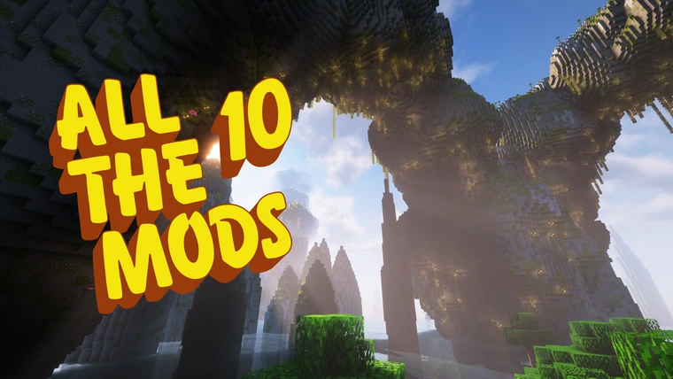

Home329
The current game we are playing is All the Mods 10, a Minecraft modpack.
Server Address: home329.xyz
How to Play
There are multiple ways to install Minecraft modpacks, whether manual or using a launcher. These instructions will explain how to do so using Prism Launcher, but any other launcher that supports mods from CurseForge, such as the CurseForge app or ATLauncher, could also be used.
- Download, install, and launch Prism Launcher. When asked to set a maximum memory allocation, choose a value of at least 8192 MiB (8 GiB)
- Select Add Instance from the top bar, select CurseForge from the column on the left side, select (or search up) "All the Mods 10 - ATM10", and then click OK. Feel free to name or group your instance as you wish, as this will not affect your ability to play.
- When a window pops up telling you that Prism was unable to download some mods, click the "Open Missing" button. Click through all of the tabs that will have opened, triggering the download on each of them. Then, return to Prism and select OK.
- Double click the instance you have created, or single click it and click "Launch on the right column. Wait for the game to launch; this will take several minutes.
- If a screen about a narrator shows up, select Continue to proceed.
- Select Multiplayer, then select Add Server. Name the server whatever you would like, and enter "home329.xyz" for the server address.
- Contact @Kroniorous on Discord with your Minecraft name so that you can be whitelisted on the server.
- Join the server and enjoy. Please note that it may take several minutes to load terrain, and the Minecraft window may appear non-responsive. This, unfortunately, is normal for ATM 10.
Previous Games
We have previously hosted two other modded Minecraft servers, one for All the Mods 9 and one for StaTech Industry.
Future Games and Projects
If you have any other game servers or other community projects you would like to see hosted here, contact Brendan (@Kroniorous on Discord).